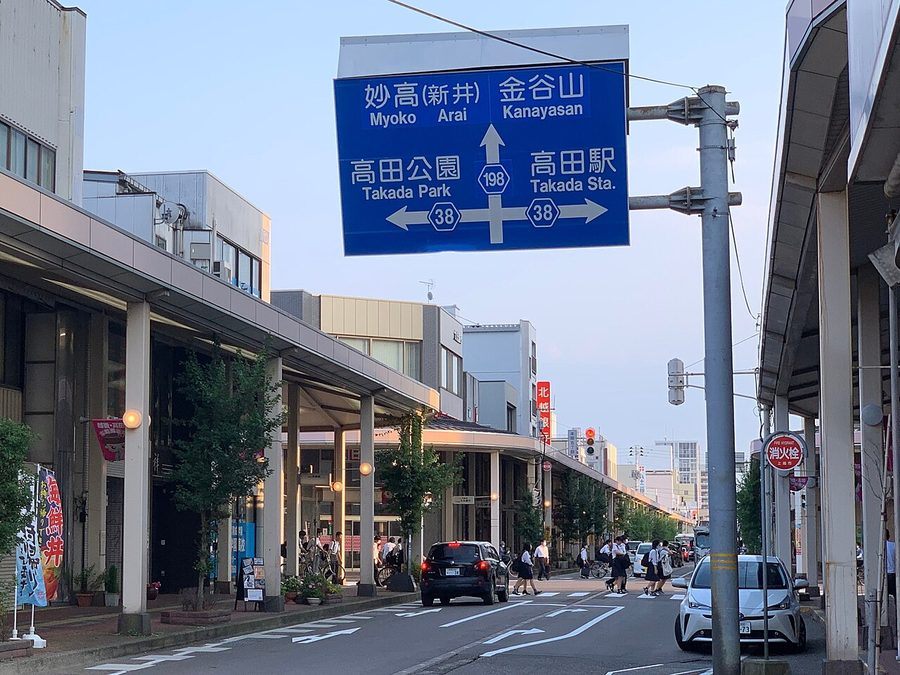
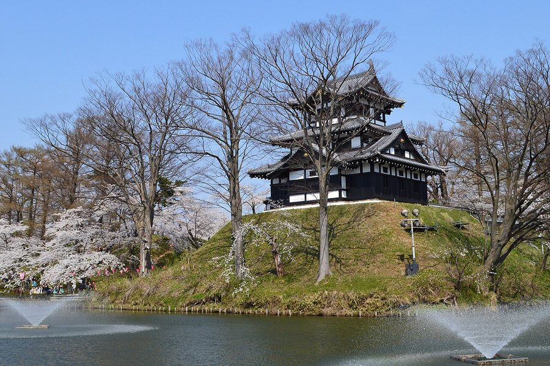
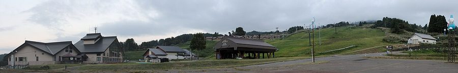

新潟県上越市の日帰り温泉・銭湯・サウナ（20件）
寄り道スポット検索アプリ「ヨッテコ」の収録データから、新潟県上越市の日帰り温泉・銭湯・サウナを営業時間・料金つきで一覧にしました（2026年8月時点）。
最も安いのは花立温泉 ろばた館（450円）。最も遅くまで入れるのは野天風呂 七福の湯 上越店（24:00まで）。朝風呂なら天然温泉 門前の湯（6:30開店）。
新潟県上越市はどんなまち？
数字で見る🔍新潟県上越市
まちの横顔



- 地形と気候: 市域の一部は佐渡弥彦米山国定公園に指定されています。気候はケッペンの気候区分で温暖湿潤気候（Cfa）に属しますが、市の全域が豪雪地帯です。2005年の合併前は旧・上越市や旧・安塚町など12町村が特別豪雪地帯にも指定されていました。
- 歴史: 律令時代には越後国の国府が置かれた地です。戦国時代には上杉謙信として知られる長尾景虎に代表される長尾氏（上杉氏）が春日山城を居城とし、江戸時代には高田藩の藩庁・高田城が置かれた城下町でした。
- 観光: 高田城址公園の桜は日本三大夜桜のひとつと称されています。城下町には、総延長16kmにおよぶ雁木通りの町並みが残っています。地域自治区が設置されており、一部地域の住所には「○○区」が用いられます。
寄り道充実度（全国偏差値）
偏差値・順位は、ヨッテコ収録データ（2026年8月時点・26,033件）を市区町村別に集計した施設数の全国分布（1,728市区町村）から毎回算出しています。カードを押すとカテゴリ別の分析に切り替わります。
日帰り温泉から見た新潟県上越市
日帰り温泉を市内で数えると20件。全国127位タイで、上位2割に入ります。——上位2割——探せば見つかる、という位置。
- サウナ併設は60%。全国の52%を1.2倍上回ります。温暖湿潤気候（Cfa）に属しながら、全域が豪雪地帯に指定された市。整えて帰るという寄り道の仕方が、60%という数字に出ています。
- 21時以降も営業する店は25%で、全国水準（40%）を下回ります。夜の選択肢は限られるので、閉店時刻は先に見ておきたいところです。
出典: 施設データ=ヨッテコ収録データ（26,033件・2026年8月時点）。偏差値・全国順位・全国水準は全1,728市区町村の分布から毎回算出。 / 人口=総務省「住民基本台帳に基づく人口、人口動態及び世帯数」（2026年1月1日現在） / 面積=国土地理院「全国都道府県市区町村別面積調」（2026年4月1日時点） / 森林率=農林水産省「2025年農林業センサス（農山村地域調査）」市区町村別林野率（2025年、林野率（林野面積÷総土地面積）） / 年平均気温=気象庁「平年値（1991-2020年）」。市区町村の代表点（国土交通省「大字・町丁目レベル位置参照情報」）から最も近い観測点の値 / まちの解説=日本語版Wikipedia「上越市」（https://ja.wikipedia.org/wiki/上越市、2026年8月21日取得、CC BY-SA 4.0） / 写真=Wikimedia Commons（各キャプションに作者・ライセンスを記載）
曜日別の営業施設数
| 月 | 火 | 水 | 木 | 金 | 土 | 日 |
|---|---|---|---|---|---|---|
| 18 | 18 | 16 | 19 | 19 | 18 | 19 |
水曜日が最も休みが多く（各4件が定休）、年中無休は13件です。※営業時間データのある20件で集計
入浴料金の分布（大人）
| 500円以下 | 4件 | |
| 501〜800円 | 9件 | |
| 1,201円以上 | 2件 |
料金が確認できた15件で集計。
施設一覧
| 施設 | 営業時間 | 料金（大人） |
|---|---|---|
| Terra Loyly テラ・ロウリュ サウナ | 10:00〜21:30 | 3,800円 |
| くわどり湯ったり村 天然温泉露天風呂サウナ Hot spring day-trip facility in rural mountain setting with … | 10:00〜20:00 | 700円 |
| ゆきだるま温泉 久比岐野 天然温泉露天風呂 Alpine resort hot spring with source water flowing naturally… | 12:00〜18:00（月休） | 700円 |
| ゑしんの里 やすらぎ荘 天然温泉 | 10:00〜19:30（火・水休） | 700円 |
| アパホテル ＜上越妙高駅前＞ 露天風呂 | 09:00〜18:00 | — |
| スカイトピア遊ランド | 10:00〜18:00（水休） | 500円 |
| マリンホテルハマナス 天然温泉サウナ 日本海を一望できる広々とした大浴場を持つ温泉ホテル。柿崎上下浜温泉の源泉は地下1,308mから汲み上げられる。 | 11:00〜19:00（水休） | 700円 |
| 上越リゾートセンター くるみ家族園 天然温泉サウナ 上越市のリゾート施設。入浴施設と食事処くるみ亭を備える。季節に応じた営業時間設定で、冬季は営業時間を短縮している。 | 09:00〜21:00 | 500円 |
| 天然温泉 釜ぶたの湯 天然温泉露天風呂サウナ 天然温泉を日帰りで利用できる施設。 | 07:00〜23:00 | — |
| 天然温泉 門前の湯 天然温泉サウナ 上越市下門前に位置する銭湯感覚の天然温泉施設で、毎日通える入湯料を設定。ナトリウム-塩化物泉で神経痛や疲労回復に効果的。… | 06:30〜24:00 | 480円 |
| 星降る天空露天風呂 鷹羽鉱泉 天然温泉露天風呂サウナ 新潟と長野の県境の山中に位置する1組限定の秘湯で、濃厚硫黄泉の露天風呂と屋外サウナが特徴。 | 11:00〜14:00 | — |
| 温泉の有る割烹 新柳 天然温泉 割烹料理屋 | 09:00〜21:00 | — |
| 潮風薫る宿 みはらし 天然温泉 | 08:00〜20:00 | — |
| 牧湯の里 深山荘 サウナ 上越市牧区の自然に恵まれた環境にある宿。大浴場は鉱泉を利用しており、地元の郷土料理が楽しめる | 10:00〜19:00 | 600円 |
| 花立温泉 ろばた館 天然温泉 | 09:00〜21:00 | 450円 |
| 道の駅 うみてらす名立 名立の湯ゆらら 露天風呂サウナ 道の駅に隣接した複合施設で、日本海を望む展望露天風呂が特徴。全国の有名温泉を再現した人工温泉湯めぐり風呂とジェットバスな… | 10:00〜21:00 ※曜日により異なる | 800円 |
| 野天風呂 七福の湯 上越店 露天風呂サウナ 7つの壷湯が特徴の野天風呂とサウナを備えた日帰り温泉施設。岩盤浴「福汗房」も人気。 | 09:00〜24:00 | 800円 |
| 長峰温泉 ゆったりの郷 天然温泉露天風呂サウナ 男女合わせて4つの内湯、2つの露天風呂、2つのサウナを備えた日帰り温泉。長峰温泉の源泉を使用。 | 10:00〜21:00（月休） | 800円 |
| 頸城地区公民館 ユートピアくびき希望館 上越市頸城区の公営施設。かつて浴室を備えた社会教育施設だったが、現在は多目的ホール・トレーニングルーム・図書館などの学習… | 09:00〜17:00 | 2,840円 |
| 鵜の浜 人魚館 天然温泉露天風呂サウナ | 10:00〜21:00（土休） | 800円 |